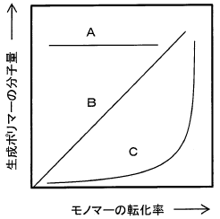

逐次重合・連鎖重合・リビング重合の違い 高分子化学
下図は、典型的な連鎖重合、逐次重合、リビング重合においてモノマーの転化率と生成するポリマーの分子量との関係を示した模式図である。それぞれ、A、B、Cに対応する重合様式として、最も適切な組合せはどれか。

①
逐次重合 / 連鎖重合 / リビング重合
②
リビング重合 / 連鎖重合 / 逐次重合
③
連鎖重合 / 逐次重合 / リビング重合
④
逐次重合 / リビング重合 / 連鎖重合
⑤
連鎖重合 / リビング重合 / 逐次重合
正答
⑤ 連鎖重合 / リビング重合 / 逐次重合
転化率と分子量のグラフで重合様式を見分ける
Aは通常の連鎖重合、Bはリビング重合、Cは逐次重合に対応するため、正答は⑤です。「高分子量の鎖がいつ現れるか」に注目すると区別できます。
| 曲線 | 重合様式 | 分子量の変化 | 理由 |
|---|---|---|---|
| A | 通常の連鎖重合 | 低い転化率でも高分子量の鎖が現れる | 活性な鎖にモノマーが次々に付加する |
| B | リビング重合 | 転化率に伴って分子量が増加する | 停止・連鎖移動がなく、成長できる鎖が保たれる |
| C | 逐次重合 | 高い転化率になって分子量が大きく増加する | モノマーやオリゴマーなどが互いに反応し、徐々に長い鎖になる |
連鎖重合と逐次重合は「鎖の成長機構」の分類
連鎖重合では、ポリマー鎖の活性部位とモノマーが反応し、成長後も活性部位が引き継がれます。逐次重合では、モノマー同士だけでなく、さまざまな重合度の分子が官能基同士で反応します。代表的な逐次重合には重縮合と重付加があります。
「連鎖／逐次」と「付加／縮合」は分類の観点が異なります。たとえば、小分子を脱離しながら連鎖的に成長する重合もあるため、「縮合重合はすべて連鎖重合」あるいは「縮合を伴えば必ず逐次重合」とは言えません。
リビング重合は連鎖重合の一種
リビング重合は、連鎖停止と連鎖移動がない連鎖重合です。開始が成長に比べて十分速く、成長する鎖の数がほぼ一定となる理想的な条件では、消費されたモノマー量に応じて鎖が長くなり、Bのような関係が得られます。
この問題のAは通常の連鎖重合、Bはその中でもリビング重合の特徴を描き分けた模式図です。実際の重合では、開始速度や停止、連鎖移動などの条件によって分子量の変化が異なります。
分類と定義の参考資料
IUPAC Gold Book：chain polymerization（連鎖重合）、polycondensation（重縮合）、living polymerization（リビング重合）。